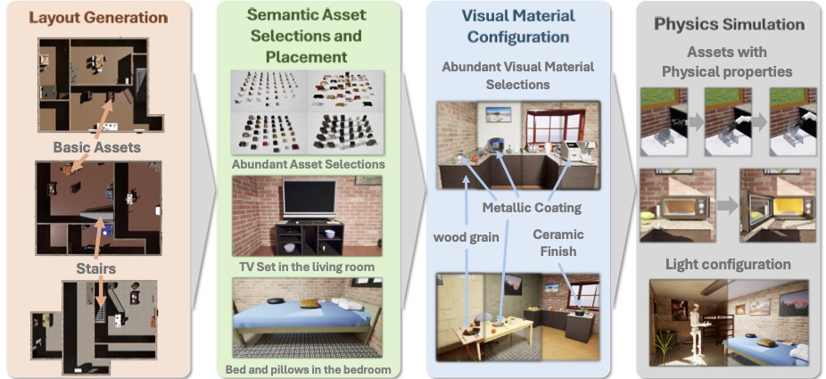
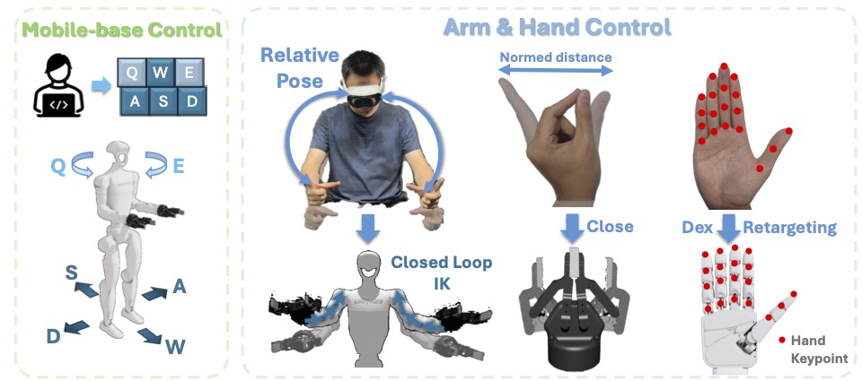
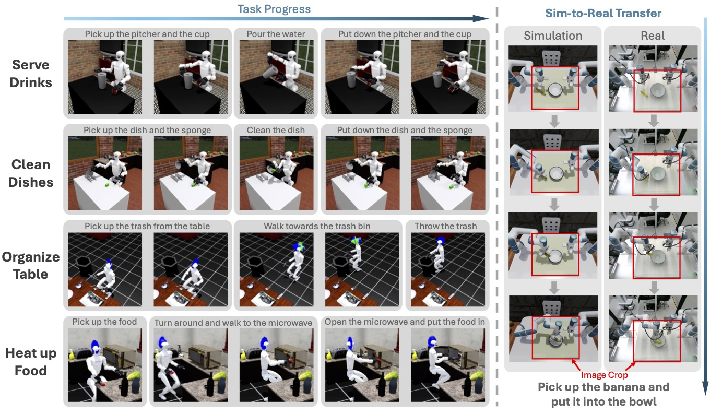

We introduce AgentWorld, an interactive simulation platform for de- veloping household mobile manipulation capabilities. Our platform combines au- tomated scene construction that encompasses layout generation, semantic asset placement, visual material configuration, and physics simulation, with a dual- mode teleoperation system supporting both wheeled bases and humanoid loco- motion policies for data collection. The resulting AgentWorld Dataset captures diverse tasks ranging from primitive actions (pick-and-place, push-pull, etc.) to multistage activities (serve drinks, heat up food, etc.) across living rooms, bed- rooms, and kitchens. Through extensive benchmarking of imitation learning meth- ods including behavior cloning, action chunking transformers, diffusion policies, and vision-language-action models, we demonstrate the dataset’s effectiveness for sim-to-real transfer. The integrated system provides a comprehensive solution for scalable robotic skill acquisition in complex home environments, bridging the gap between simulation-based training and real-world deployment.
Our pipeline mainly comprises four key stages: Layout Generation, Semantic Asset Selections and Placement, Visual Material Configuration, and Interactive Physics Simulation. The first three stages are implemented in Unreal Engine, leveraging its superior rendering capabilities and intuitive blueprint system for efficient scene design. For the Interactive Physics Simulation stage, we utilize NVIDIA’s Omniverse Isaac Sim, which provides enhanced physics engine performance crucial for sim-to-real transfer and enables efficient parallel training of robotic agents.
Data collection system of AgentWorld. For the mobile-base control, we allow the users to use the keyboard to to control robots, both wheel-based and legged. For arm & hand control, we use the VR head set to get the hand pose and compute IK for obtaining the arm action, and utilize retargeting methods to drive robotic hands.
Qualitative results for different imitation learning algorithms in AgentWorld Dataset, and a Sim-to-real transfer example to validate the availability and generalizability of our data.
BibTex Code